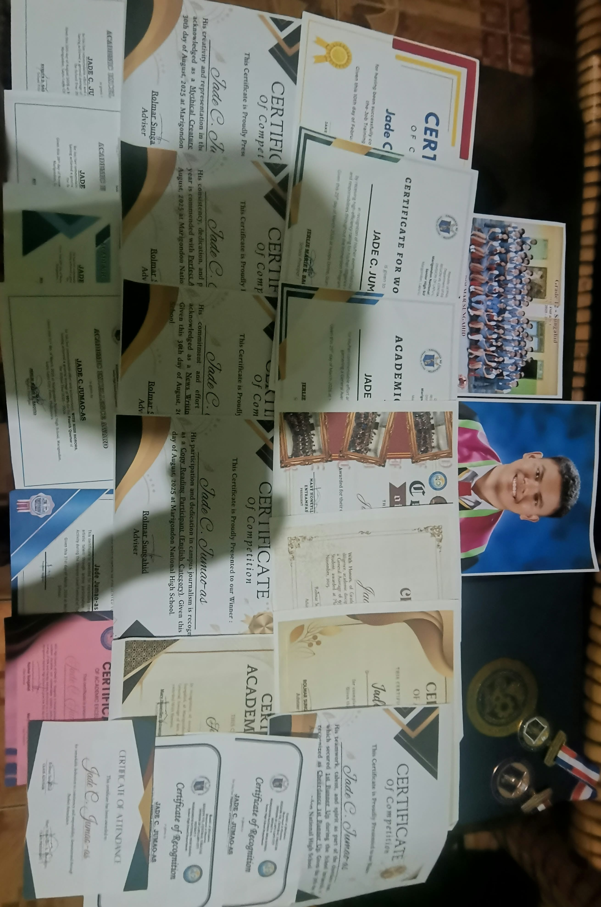
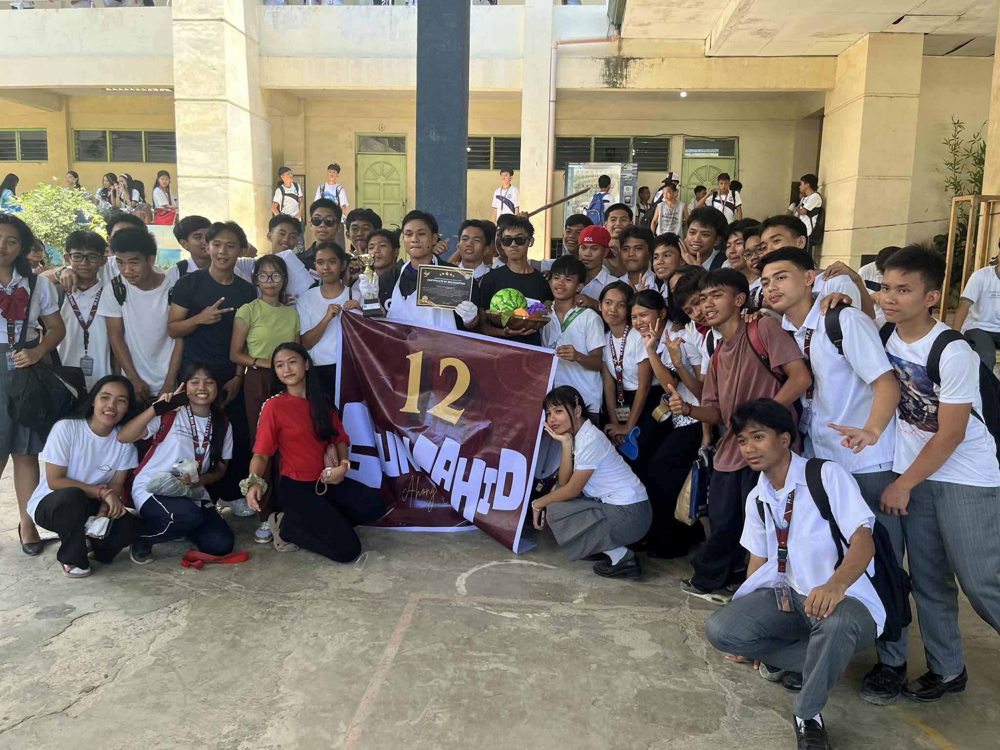
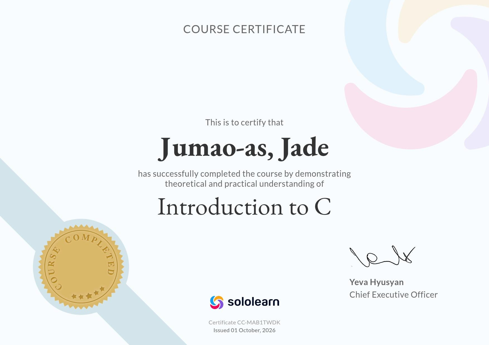
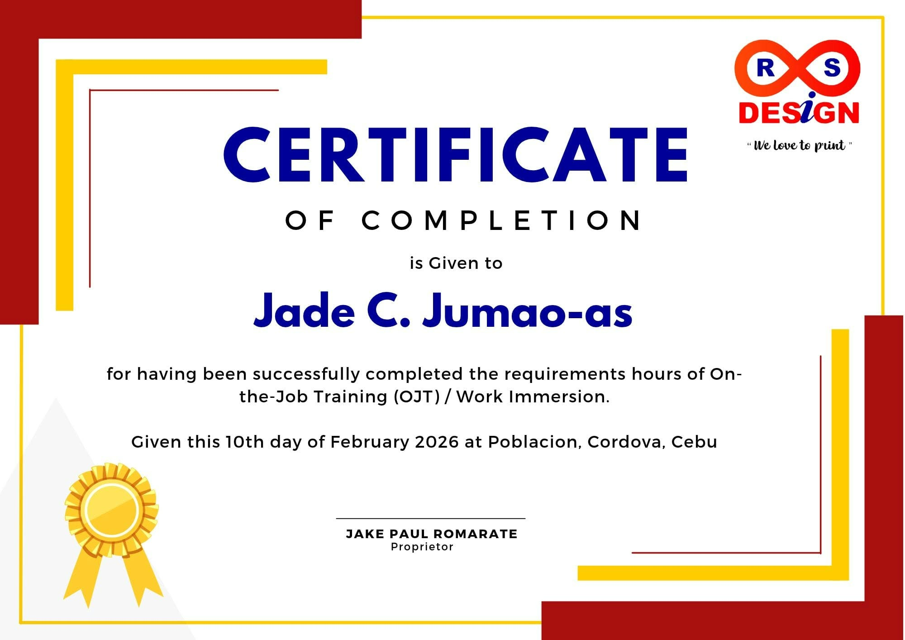

WELCOME TO MY PORTFOLIO
Welcome to my personal portfolio! I am a BSIT student passionate about learning programming, web development, and computer technology. Here, you can explore my skills, projects, and achievements as I continue to learn, grow, and improve in the field of technology.
Hi! I'm Jade C. Jumao-as, a first-year BSIT student at Cordova Public College (CPC). I graduated from Marigondon National High School under the Technical-Vocational-Livelihood (TVL) track, specializing in Information and Communications Technology (ICT). I also completed my work immersion at RS DESIGN, located in Cordova City, where I gained valuable experience and developed my skills in a professional work environment.
Outside of school, I enjoy playing online games, particularly Roblox, where I engage in buying and selling (BNS). This activity has helped me improve my communication and negotiation skills while gaining basic knowledge of business and online transactions. I also enjoy exploring new interests, learning new skills, and taking advantage of opportunities that help me grow, develop my abilities, and become a better version of myself.
Creating clean, well-structured, and user-friendly web pages that provide a smooth and accessible browsing experience.
Designing modern and visually appealing websites using responsive layouts, grid systems, and well-balanced color combinations.
Applying basic programming concepts such as variables, conditional statements, loops, and logical operations to create simple and functional programs.
Enhancing my analytical and logical thinking skills by solving problems and completing various coding exercises.
Here are some of the awards, certificates, and achievements I have earned throughout my academic journey, reflecting my hard work, dedication, and continuous growth as a student.
A recognition of my academic achievements, hard work, and dedication to continuous learning and improvement.

A meaningful achievement that highlights my growth, dedication, and memorable experiences throughout my academic journey.

I gained a basic understanding of C programming, including the use of input and output functions, as well as conditional statements to create simple programs.

A recognition of my work immersion experience, highlighting the skills, knowledge, and practical experience I gained in a professional work environment.

I am eager to explore opportunities where I can gain hands-on experience, apply my knowledge, and further develop my skills in the field of technology. Feel free to contact me through any of the details provided below.